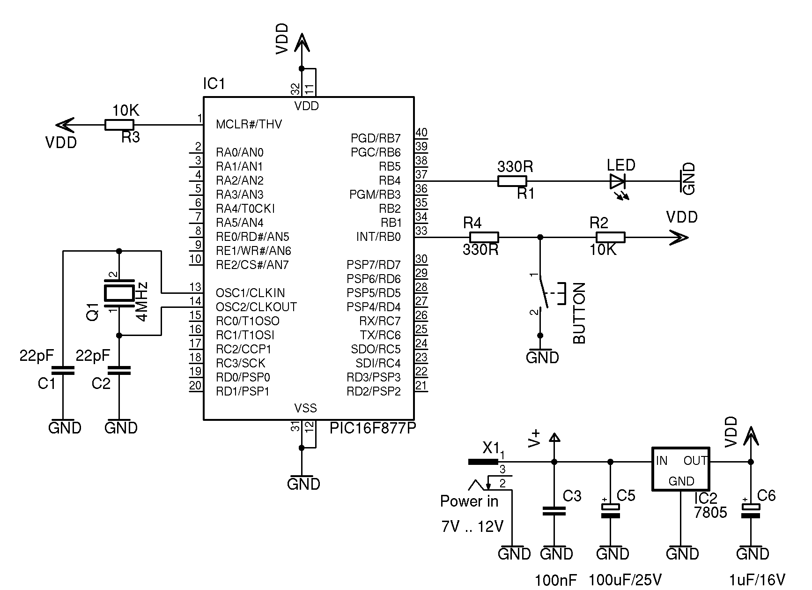

The examples of this section have been tested in a real PIC. The circuit for all examples is:

A 47nF to 100nF capacitor is recommended between MCLR and ground. this will avoid unvanted resets when noisy loads or power supplies are used.
No PCB layout is given, you are free to build your PCB design.
All example in this section have a number starting each line. These numbers are only here for teaching purposes and should not be in your project files.